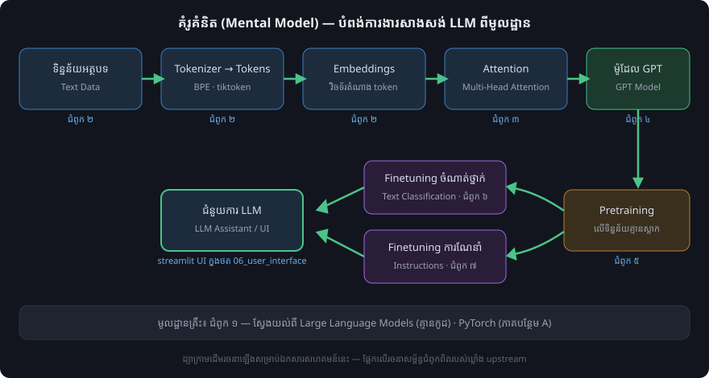

ទិដ្ឋភាពទូទៅ
Note
ប្រភព៖ README.md និង setup/README.md នៃឃ្លាំង upstream។
តើគម្រោងនេះជាអ្វី?
LLMs-from-scratch គឺជាឃ្លាំងកូដផ្លូវការ សម្រាប់សៀវភៅ Build a Large Language Model (From Scratch) ដែលណែនាំអ្នកអានឱ្យស្វែងយល់ ពីរបៀបដែល LLM ដំណើរការពីខាងក្នុង តាមរយៈការសរសេរកូដពីមូលដ្ឋានម្តងមួយៗជំហានៗ។
ចំណុចសំខាន់ៗ៖
វិធីសាស្ត្រក្នុងសៀវភៅបង្កើតម៉ូដែលតូចប៉ុន្តែដំណើរការបាន សម្រាប់គោលបំណងអប់រំ ដែលឆ្លុះបញ្ចាំង ពីវិធីសាស្ត្របង្កើតម៉ូដែលមូលដ្ឋានខ្នាតធំ (ដូចជាម៉ូដែលនៅពីក្រោយ ChatGPT)។
សៀវភៅរួមបញ្ចូលកូដសម្រាប់ផ្ទុក weights នៃម៉ូដែល pretrained ធំៗ ដើម្បី finetune។
ការអនុវត្តទាំងអស់ប្រើ PyTorch ដោយមិនប្រើបណ្ណាល័យ LLM ខាងក្រៅទេ។
មានវីដេអូមេរៀនអមសៀវភៅរយៈពេល 17 ម៉ោង 15 នាទី (Master and Build Large Language Models) ដែលរៀបចំជាជំពូក និងផ្នែកស្របតាមរចនាសម្ព័ន្ធសៀវភៅ។
តំណភ្ជាប់ផ្លូវការ
ធនធាន |
តំណភ្ជាប់ |
|---|---|
ឃ្លាំងកូដផ្លូវការ |
|
សៀវភៅនៅ Manning |
|
សៀវភៅនៅ Amazon.com |
|
ISBN |
9781633437166 |
តម្រូវការជាមុន
តម្រូវការសំខាន់បំផុតគឺ មូលដ្ឋានគ្រឹះរឹងមាំក្នុងការសរសេរកម្មវិធី Python។
បើអ្នកមានបទពិសោធជាមួយ deep neural networks ខ្លះ នោះគំនិតមួយចំនួននឹងកាន់តែងាយយល់ ព្រោះ LLM សាងសង់លើស្ថាപត្យកម្មទាំងនោះ។
ជំនាញ PyTorch មិនមែនជាតម្រូវការជាមុនទេ ប៉ុន្តែការស្គាល់មូលដ្ឋាន PyTorch មានប្រយោជន៍។ ភាគបន្ថែម A (Appendix A) ផ្តល់ការណែនាំសង្ខេបអំពី PyTorch។
ជម្រើសបន្ថែម៖ សៀវភៅ PyTorch in One Hour របស់អ្នកនិពន្ធដូចគ្នា។
តម្រូវការផ្នែករឹង
កូដក្នុងជំពូកមេរបស់សៀវភៅត្រូវបានរចនាឡើងដើម្បីដំណើរការលើកុំព្យូទ័រយួរដៃធម្មតា ក្នុងរយៈពេលសមហេតុផល ដោយមិនត្រូវការផ្នែករឹងពិសេសទេ។ កូដនឹងប្រើ GPU ដោយស្វ័យប្រវត្តិ បើមាន។ អ្នកនិពន្ធបានសាកល្បងជំពូកមេទាំងអស់លើកុំព្យូទ័រ M3 MacBook Air។
Note
វេទិកាពពក (cloud) ដែលមាន NVIDIA GPU អាចជួយបង្កើនល្បឿនដំណើរការបានយ៉ាងច្រើន ជាពិសេសសម្រាប់ជំពូក ៥ ដល់ ៧។ មើលទំព័រ ការដំឡើងបរិស្ថាន សម្រាប់ព័ត៌មានលម្អិត។
ផែនទីជំពូក និងកូដសំខាន់ៗ


គំរូគំនិតសង្ខេបនៃបំពង់ការងារទាំងមូល — ដ្យាក្រាមដើមជាភាសាខ្មែរ រចនាឡើងសម្រាប់ ឯកសារសហគមន៍នេះ ដោយផ្អែកលើរចនាសម្ព័ន្ធជំពូកពិតរបស់ upstream។
ជំពូក |
កូដមេ (ចូលដំណើរការរហ័ស) |
ថតកូដទាំងអស់ |
|---|---|---|
ជំពូក ១៖ Understanding Large Language Models |
គ្មានកូដ |
— |
ជំពូក ២៖ Working with Text Data |
|
|
ជំពូក ៣៖ Coding Attention Mechanisms |
|
|
ជំពូក ៤៖ Implementing a GPT Model from Scratch |
|
|
ជំពូក ៥៖ Pretraining on Unlabeled Data |
|
|
ជំពូក ៦៖ Finetuning for Text Classification |
|
|
ជំពូក ៧៖ Finetuning to Follow Instructions |
|
កូដមេទាំងអស់ស្ថិតនៅក្នុងថតย่อย 01_main-chapter-code នៃជំពូកនីមួយៗ។
លំហាត់ និងការធ្វើតេស្តចំណេះដឹង
ជំពូកនីមួយៗមានលំហាត់ជាច្រើន។ ចម្លើយត្រូវបានសង្ខេបក្នុងភាគបន្ថែម C (Appendix C) ហើយ notebook ចម្លើយមានក្នុងថតជំពូកនីមួយៗ ឧទាហរណ៍ ./ch02/01_main-chapter-code/exercise-solutions.ipynb។
មាន PDF ឥតគិតថ្លៃ 170 ទំព័រ Test Yourself On Build a Large Language Model (From Scratch) ពីគេហទំព័រ Manning ដែលមានសំណួរ quiz ប្រហែល 30 សំណួរ និងចម្លើយក្នុងមួយជំពូក។
សៀវភៅបន្ត (Companion Book)
Build A Reasoning Model (From Scratch) គឺជាសៀវភៅឯករាជ្យមួយ ដែលអាចចាត់ទុកជាភាគបន្តនៃសៀវភៅនេះ។ វាចាប់ផ្តើមពីម៉ូដែល pretrained ហើយអនុវត្តវិធីសាស្ត្រ reasoning ផ្សេងៗ រួមមាន inference-time scaling, reinforcement learning និង distillation។
Tip
បន្ទាប់៖ រៀបចំបរិស្ថាន Python និងឧបករណ៍របស់អ្នកក្នុងទំព័រ ការដំឡើងបរិស្ថាន។